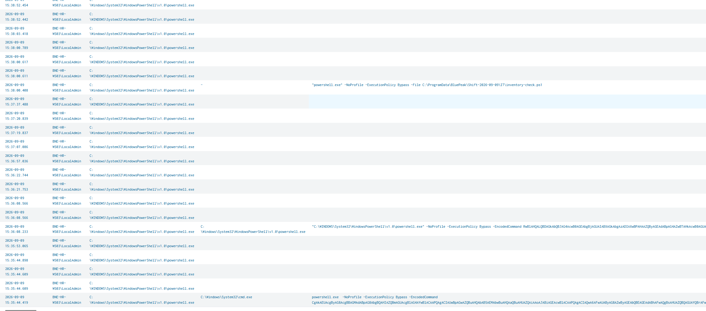
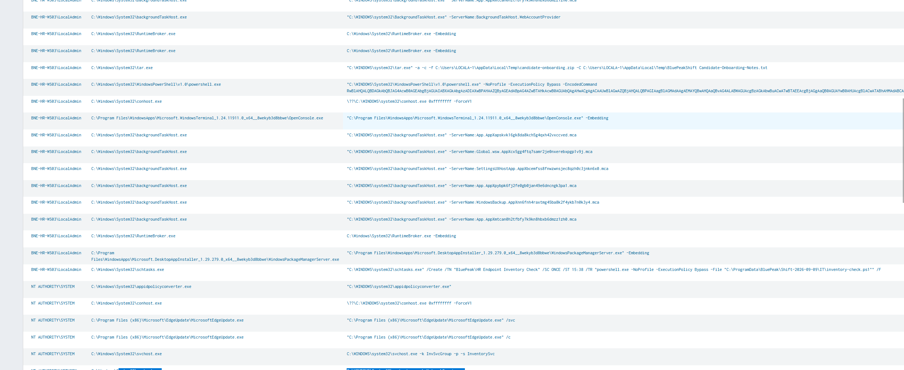
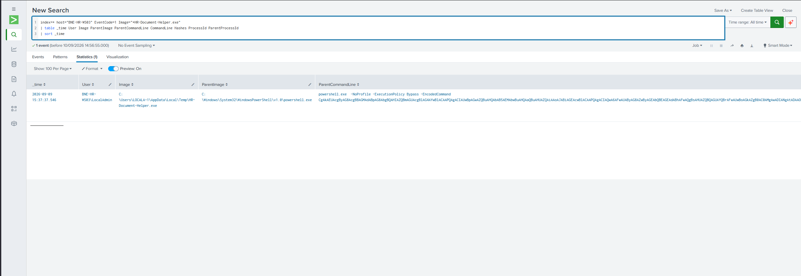
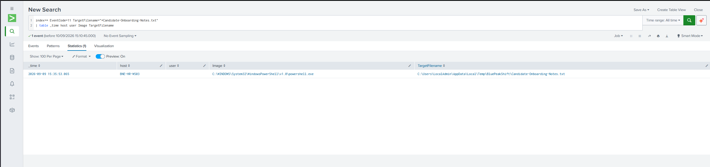
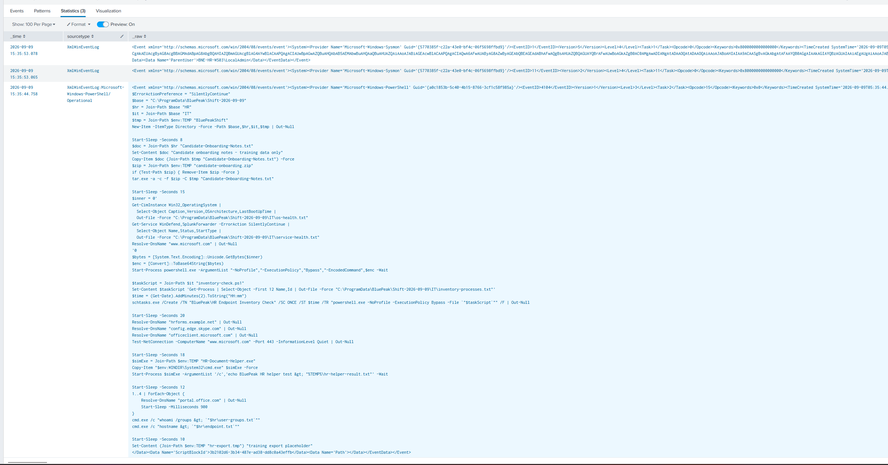
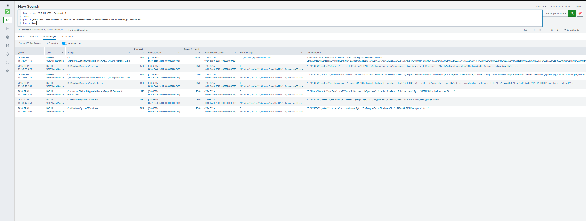
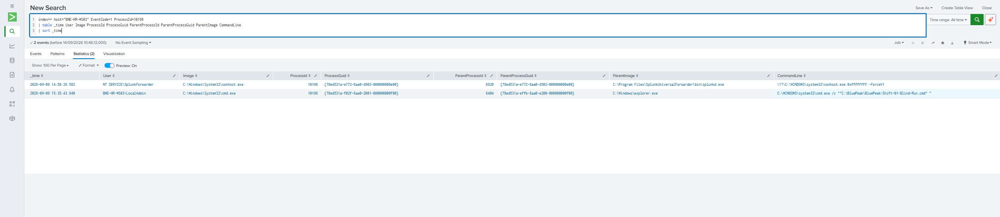

BP-005
HR Endpoint Alert Triage & Correlation
Published Sep 2026
Suspicious endpoint activity during an approved IT maintenance window, with unexplained HR-themed artifacts traced through file provenance and process ancestry.
Assessment: Benign activity
SUMMARY
Executive summary
Multiple alerts on BNE-HR-WS03 triggered review after encoded PowerShell, execution-policy bypass, archive creation, scheduled-task activity and execution from a user-writable temporary directory were observed.
Approved change CHG-2026-0917 explained endpoint inventory and security-agent validation during the same timeframe. However, HR-themed file staging, creation of candidate-onboarding.zip, a temporary executable named HR-Document-Helper.exe and an undocumented scheduled task were not fully accounted for by the change record. These events were investigated separately rather than automatically attributed to the authorized activity.
Correlation across PowerShell Operational and Sysmon telemetry established that Candidate-Onboarding-Notes.txt was generated locally by the script using synthetic training data, copied into a temporary staging directory and archived by tar.exe. Process IDs, Process GUIDs and parent-process relationships linked the archive, encoded PowerShell, scheduled task, helper executable and discovery commands to the same PowerShell execution chain. Reviewed DNS and network telemetry did not provide evidence that the archive was transferred externally.
Disposition: Closed as benign activity with high confidence. No containment was recommended; the documentation discrepancy should be reviewed with IT Operations.
TIMELINE
Key evidence
cmd.exe launches PowerShell with -NoProfile -ExecutionPolicy Bypass -EncodedCommand.
PowerShell creates/stages Candidate-Onboarding-Notes.txt under the user's temporary BluePeakShift directory. tar.exe then creates candidate-onboarding.zip containing that file.
A child encoded PowerShell instance performs OS/service-health validation. Additional activity includes creation of the one-time BluePeak\HR Endpoint Inventory Check task.
HR-Document-Helper.exe executes from the user's Temp directory. Subsequent commands collect group and hostname context.
PowerShell Operational telemetry reveals that the HR-themed document was created by the script itself with synthetic training content, materially changing the working hypothesis.
Sysmon process telemetry links the relevant child processes to PowerShell PID 9540, then traces that PowerShell instance back through cmd.exe PID 10196 to the originating local shift execution.
INVESTIGATION
Key SPL
index=* host="BNE-HR-WS03" EventCode=1
| table _time User Image ProcessId ProcessGuid
ParentProcessId ParentProcessGuid ParentImage CommandLine
| sort _timeindex=* EventCode=11
TargetFilename="*Candidate-Onboarding-Notes.txt"
| table _time host user Image TargetFilenameindex=* host="BNE-HR-WS03"
"Candidate-Onboarding-Notes.txt"
| table _time sourcetype _raw
| head 5index=* host="BNE-HR-WS03" (EventCode=22 OR EventCode=3)
earliest="09/09/2026:15:35:00" latest="09/09/2026:15:45:00"
| stats count earliest(_time) as firstSeen latest(_time) as lastSeen
by Image DestinationIp DestinationPort User
| convert ctime(firstSeen) ctime(lastSeen)
| sort - countindex=* host="BNE-HR-WS03" EventCode=1 "9540"
| table _time User Image ProcessId ProcessGuid
ParentProcessId ParentProcessGuid ParentImage CommandLine
| sort _timeindex=* host="BNE-HR-WS03" EventCode=1 ProcessId=10196
| table _time User Image ProcessId ProcessGuid
ParentProcessId ParentProcessGuid ParentImage CommandLine
| sort _timeInitial Encoded PowerShell
Initial triage identified PowerShell running under LocalAdmin with -ExecutionPolicy Bypass and an encoded command. These characteristics justified investigation but were not treated as proof of malicious execution.

HR Archive Creation
The tar.exe command line established that Candidate-Onboarding-Notes.txt was specifically added to candidate-onboarding.zip.

Temporary Helper Execution
Sysmon identified HR-Document-Helper.exe executing from the user's Temp directory as a child of the PowerShell activity under investigation.

Candidate File Creation
Sysmon Event ID 11 confirmed powershell.exe created the staged Candidate-Onboarding-Notes.txt file under Temp\BluePeakShift.

PowerShell File Provenance
PowerShell Operational telemetry revealed the decisive provenance evidence: the script itself created Candidate-Onboarding-Notes.txt with synthetic training content, copied it to Temp and invoked tar.exe to archive it.

Process Tree Correlation
Process ID and parent-process correlation linked tar.exe, the child encoded PowerShell, schtasks.exe, HR-Document-Helper.exe and discovery commands to the same parent PowerShell process, PID 9540.

Execution Origin
Following the ancestry one level further identified cmd.exe PID 10196 and traced the investigated chain back to the originating local BluePeak shift execution.

ANALYSIS
Analyst Reasoning
The investigation began with a high-severity PowerShell alert during an approved IT maintenance window. Change CHG-2026-0917 accounted for administrative PowerShell, OS and service-health collection, hostname and user/group context, and connectivity validation. It did not document collection or archiving of HR/business documents, custom executables or expected persistence.
I initially leaned toward the surrounding activity being part of the authorized IT operation because several events aligned closely with the approved change. Rather than closing on that assumption, I separated the unexplained HR-themed artifacts and investigated what created them, what happened to them and whether they were associated with external communication.
Sysmon established that PowerShell created the staged candidate file and that tar.exe archived it. Searching the filename across available telemetry then exposed the PowerShell script block responsible for its creation. This was the key hypothesis-changing evidence: the apparent HR document was not shown to be pre-existing business data collected from the workstation; the script generated synthetic training content itself.
I then correlated the activity back into Sysmon Event ID 1 using process IDs, Process GUIDs and parent relationships. The archive process, encoded PowerShell, scheduled task, temporary helper and discovery commands converged on the same PowerShell parent. Walking the ancestry further established the local execution origin of that chain. DNS and network telemetry were reviewed separately, and no evidence was identified that the candidate archive was transferred externally.
ASSESSMENT
Disposition and Recommended Actions
Assessment: The investigated activity is assessed as benign administrative/test activity. The HR-themed document was generated locally as synthetic training data by the same scripted execution chain responsible for the surrounding validation activity. The reviewed telemetry did not establish collection of genuine HR data, a separate malicious execution chain or external transfer of the archive.
Disposition: Closed as benign activity.
Confidence: High.
Recommended actions: Close the security alert without containment. Review the associated change documentation with IT Operations because several generated artifacts and scripted actions were not represented clearly in the approved change scope.
MITRE ATT&CK
Observed Technique Mapping
These mappings describe behaviours visible in the telemetry and do not imply malicious intent. Here they were ultimately attributed to benign scripted test/administrative activity.
LIMITATIONS
Evidence Boundaries
The investigation did not treat the absence of an observed network connection as proof that communication was impossible. The conclusion is limited to the telemetry reviewed: no evidence was identified linking the candidate archive to an external transfer.
Sysmon file-creation telemetry established that files were created but did not independently establish their contents. File provenance was instead supported by PowerShell Operational telemetry showing the script used to generate the candidate document and its synthetic training string.
The BluePeak shift launcher is part of the lab simulation mechanism. Once process ancestry reached that local launcher, continuing further would describe the mechanics of the exercise rather than provide additional incident evidence.
RETROSPECTIVE
Analyst Development
This investigation exposed an anchoring risk in my own reasoning. Because the activity resembled a previous benign IT investigation, I initially generalized some surrounding events as likely belonging to the approved operation. I corrected this by separating the unexplained artifacts and independently testing their provenance, subsequent activity and process ancestry.
The most valuable development was moving from reviewing isolated suspicious events to correlating relationships between them. A filename became a pivot into file creation, script-block telemetry, process IDs and GUIDs, parent/child relationships and ultimately execution origin. When a PowerShell Activity ID did not provide useful correlation outside its own log, I changed correlation keys rather than treating the dead end as the end of the investigation.
Skills reinforced: investigative hypothesis testing · cross-log correlation · file provenance · process ancestry · Sysmon PID/ProcessGuid correlation · PowerShell analysis · ITSM/change validation · evidence-vs-inference language.
DEVELOPMENT
Next Development Steps
Continue developing investigation-led searching: define the fact that needs to be established, identify the evidence that could prove or disprove it, then choose the telemetry and correlation key most likely to contain that evidence.
Practise moving between correlation keys such as filename, hash, PID, ProcessGuid, parent process, user/logon session, destination and timestamp rather than relying on a single identifier across every telemetry source.